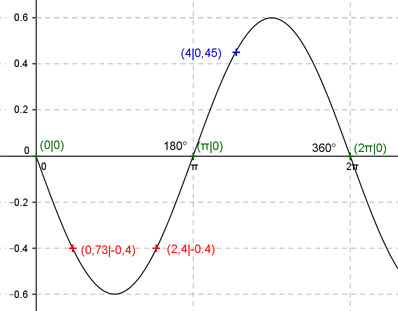

Aufgabe 158 Ergänzen Sie die Wertetabelle für x zwischen 0 und 2π: y = - 0,6 sin x x 4 0,73 oder 2,4 y 0,45 -0,4 Amplitude = 0,6 ; Periode = 2π Berechnung der Nullstellen: -0,6 sin x = 0 ---> x = k * π und k = 0, 1, 2 --> x1 = 0 oder 0°, x2 = π oder 180°, x3 = 2π oder 360°.  Funktionswert an einer Stelle x ermitteln: 4 * 180° x = 4 oder ---------- = 229,2° π f(4) = - 0,6 sin 4 = - 0,6 sin 229,2° = 0,45 gerundet. Berechnung der x-Werte für y = f(x) = -0,4: f(x) = - 0,4 eingesetzt, existiert zweimal zwischen 0 und π bzw. 0° und 180° (siehe Graph). -0,6sin x = -0,4 |:(-0,6) sin x = 0,667 --> x = arc sin 0,667 = 0,73 gerundet --> -0,6sinx (Spiegelung von 0,6sinx an der x-Achse) --> 0,73 * 180° x1 = 0,73 oder ------------- = 41,8° π x2 = (π - 0,73) = 2,4 oder 137,5° gerundet.